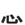

|
leftheart |
|  | bottomheart |
| SHIN |
|
Imagine the SHINING sacred heart(心) in all those Mexican pictures:
 |
| こころ |
heart, metaphorically. 'All my heart' and that kind of good shit.
★★★★★ |
| 心配 する | |
| 心臓 | |
| 安心 |
a feeling of relief
★★★☆☆
|
| 愛国心 |
patriotism
★★☆☆☆
|
|
discreet, prudent
弁える 慎重 思慮深い 用心 |
|
novice
素人 初心者 未熟 |
|
passion
情熱 熱心 恋 |
|
pathos, misery, pitifulness
かわいいそうな 哀れな 惨めな 哀愁 心細い 悲惨な |
|
pleasant
快い 心地よい 親しい 優しい |
|
wish
希望 意思 願い 野心 望み 志す |
 KANJIDAMAGE
KANJIDAMAGE
 Number
98
Number
98